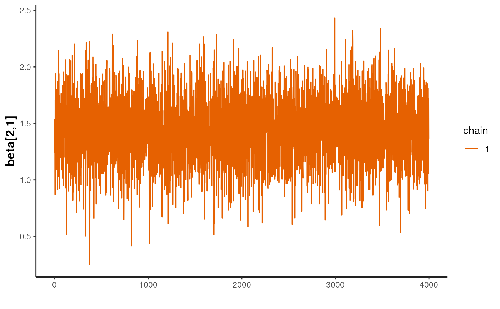

Overview of the sccomp package
Stefano Mangiola
2023-12-06
Source:vignettes/introduction.Rmd
introduction.Rmd

Installation
Bioconductor
if (!requireNamespace("BiocManager")) install.packages("BiocManager")
BiocManager::install("sccomp")Github
devtools::install_github("stemangiola/sccomp")Analysis
sccomp can model changes in composition and variability.
By default, the formula for variability is either ~1, which
assumes that the cell-group variability is independent of any covariate
or ~ factor_of_interest, which assumes that the model is
dependent on the factor of interest only. The variability model must be
a subset of the model for composition.
Binary factor
From Seurat, SingleCellExperiment, metadata objects
single_cell_object |>
sccomp_estimate(
formula_composition = ~ type,
.sample = sample,
.cell_group = cell_group,
bimodal_mean_variability_association = TRUE,
cores = 1
)From counts
counts_obj |>
sccomp_estimate(
formula_composition = ~ type,
.sample = sample,
.cell_group = cell_group,
.count = count,
bimodal_mean_variability_association = TRUE,
cores = 1
)##
## SAMPLING FOR MODEL 'glm_multi_beta_binomial' NOW (CHAIN 1).
## Chain 1:
## Chain 1: Gradient evaluation took 0.000511 seconds
## Chain 1: 1000 transitions using 10 leapfrog steps per transition would take 5.11 seconds.
## Chain 1: Adjust your expectations accordingly!
## Chain 1:
## Chain 1:
## Chain 1: Iteration: 1 / 4300 [ 0%] (Warmup)
## Chain 1: Iteration: 301 / 4300 [ 7%] (Sampling)
## Chain 1: Iteration: 1300 / 4300 [ 30%] (Sampling)
## Chain 1: Iteration: 2300 / 4300 [ 53%] (Sampling)
## Chain 1: Iteration: 3300 / 4300 [ 76%] (Sampling)
## Chain 1: Iteration: 4300 / 4300 [100%] (Sampling)
## Chain 1:
## Chain 1: Elapsed Time: 3.172 seconds (Warm-up)
## Chain 1: 20.896 seconds (Sampling)
## Chain 1: 24.068 seconds (Total)
## Chain 1:## # A tibble: 72 × 14
## cell_group parameter factor c_lower c_effect c_upper c_n_eff c_R_k_hat
## <chr> <chr> <chr> <dbl> <dbl> <dbl> <dbl> <dbl>
## 1 B1 (Intercept) NA 0.874 1.12 1.36 4033. 1.00
## 2 B1 typecancer type -1.05 -0.644 -0.262 4310. 1.00
## 3 B2 (Intercept) NA 0.399 0.699 0.981 5413. 1.00
## 4 B2 typecancer type -1.23 -0.723 -0.249 4657. 1.00
## 5 B3 (Intercept) NA -0.671 -0.392 -0.128 5671. 1.00
## 6 B3 typecancer type -0.745 -0.315 0.0909 4761. 1.00
## 7 BM (Intercept) NA -1.32 -1.04 -0.756 5995. 1.00
## 8 BM typecancer type -0.726 -0.310 0.0777 7052. 1.00
## 9 CD4 1 (Intercept) NA 0.0773 0.298 0.513 5594. 1.00
## 10 CD4 1 typecancer type -0.114 0.186 0.470 4930. 1.00
## # ℹ 62 more rows
## # ℹ 6 more variables: v_lower <dbl>, v_effect <dbl>, v_upper <dbl>,
## # v_n_eff <dbl>, v_R_k_hat <dbl>, count_data <list>Of the output table, the estimate columns start with the prefix
c_ indicate composition, or with
v_ indicate variability (when
formula_variability is set).
Contrasts
seurat_obj |>
sccomp_estimate(
formula_composition = ~ 0 + type,
.sample = sample,
.cell_group = cell_group,
bimodal_mean_variability_association = TRUE,
cores = 1
) |>
sccomp_test( contrasts = c("typecancer - typehealthy", "typehealthy - typecancer"))##
## SAMPLING FOR MODEL 'glm_multi_beta_binomial' NOW (CHAIN 1).
## Chain 1:
## Chain 1: Gradient evaluation took 0.000305 seconds
## Chain 1: 1000 transitions using 10 leapfrog steps per transition would take 3.05 seconds.
## Chain 1: Adjust your expectations accordingly!
## Chain 1:
## Chain 1:
## Chain 1: Iteration: 1 / 4300 [ 0%] (Warmup)
## Chain 1: Iteration: 301 / 4300 [ 7%] (Sampling)
## Chain 1: Iteration: 1300 / 4300 [ 30%] (Sampling)
## Chain 1: Iteration: 2300 / 4300 [ 53%] (Sampling)
## Chain 1: Iteration: 3300 / 4300 [ 76%] (Sampling)
## Chain 1: Iteration: 4300 / 4300 [100%] (Sampling)
## Chain 1:
## Chain 1: Elapsed Time: 2.153 seconds (Warm-up)
## Chain 1: 17.608 seconds (Sampling)
## Chain 1: 19.761 seconds (Total)
## Chain 1:## # A tibble: 60 × 18
## cell_group parameter factor c_lower c_effect c_upper c_pH0 c_FDR c_n_eff
## <chr> <chr> <chr> <dbl> <dbl> <dbl> <dbl> <dbl> <dbl>
## 1 B immature typecanc… NA -1.89 -1.40 -0.904 0 0 NA
## 2 B immature typeheal… NA 0.904 1.40 1.89 0 0 NA
## 3 B mem typecanc… NA -2.32 -1.72 -1.05 0 0 NA
## 4 B mem typeheal… NA 1.05 1.72 2.32 0 0 NA
## 5 CD4 cm S10… typecanc… NA -1.48 -1.03 -0.624 0 0 NA
## 6 CD4 cm S10… typeheal… NA 0.624 1.03 1.48 0 0 NA
## 7 CD4 cm hig… typecanc… NA 0.809 1.76 2.87 5.00e-4 1.00e-4 NA
## 8 CD4 cm hig… typeheal… NA -2.87 -1.76 -0.809 5.00e-4 1.00e-4 NA
## 9 CD4 cm rib… typecanc… NA 0.311 0.999 1.74 1.42e-2 4.18e-3 NA
## 10 CD4 cm rib… typeheal… NA -1.74 -0.999 -0.311 1.42e-2 4.18e-3 NA
## # ℹ 50 more rows
## # ℹ 9 more variables: c_R_k_hat <dbl>, v_lower <dbl>, v_effect <dbl>,
## # v_upper <dbl>, v_pH0 <dbl>, v_FDR <dbl>, v_n_eff <dbl>, v_R_k_hat <dbl>,
## # count_data <list>Categorical factor (e.g. Bayesian ANOVA)
This is achieved through model comparison with loo. In
the following example, the model with association with factors better
fits the data compared to the baseline model with no factor association.
For comparisons check_outliers must be set to FALSE as the
leave-one-out must work with the same amount of data, while outlier
elimination does not guarantee it.
If elpd_diff is away from zero of > 5
se_diff difference of 5, we are confident that a model is
better than the other reference.
In this case, -79.9 / 11.5 = -6.9, therefore we can conclude that model
one, the one with factor association, is better than model two.
library(loo)
# Fit first model
model_with_factor_association =
seurat_obj |>
sccomp_estimate(
formula_composition = ~ type,
.sample = sample,
.cell_group = cell_group,
check_outliers = FALSE,
bimodal_mean_variability_association = TRUE,
cores = 1,
enable_loo = TRUE
)
# Fit second model
model_without_association =
seurat_obj |>
sccomp_estimate(
formula_composition = ~ 1,
.sample = sample,
.cell_group = cell_group,
check_outliers = FALSE,
bimodal_mean_variability_association = TRUE,
cores = 1 ,
enable_loo = TRUE
)
# Compare models
loo_compare(
model_with_factor_association |> attr("fit") |> loo(),
model_without_association |> attr("fit") |> loo()
)Differential variability, binary factor
We can model the cell-group variability also dependent on the type, and so test differences in variability
res =
seurat_obj |>
sccomp_estimate(
formula_composition = ~ type,
formula_variability = ~ type,
.sample = sample,
.cell_group = cell_group,
bimodal_mean_variability_association = TRUE,
cores = 1
)##
## SAMPLING FOR MODEL 'glm_multi_beta_binomial' NOW (CHAIN 1).
## Chain 1:
## Chain 1: Gradient evaluation took 0.000301 seconds
## Chain 1: 1000 transitions using 10 leapfrog steps per transition would take 3.01 seconds.
## Chain 1: Adjust your expectations accordingly!
## Chain 1:
## Chain 1:
## Chain 1: Iteration: 1 / 4300 [ 0%] (Warmup)
## Chain 1: Iteration: 301 / 4300 [ 7%] (Sampling)
## Chain 1: Iteration: 1300 / 4300 [ 30%] (Sampling)
## Chain 1: Iteration: 2300 / 4300 [ 53%] (Sampling)
## Chain 1: Iteration: 3300 / 4300 [ 76%] (Sampling)
## Chain 1: Iteration: 4300 / 4300 [100%] (Sampling)
## Chain 1:
## Chain 1: Elapsed Time: 3.937 seconds (Warm-up)
## Chain 1: 34.034 seconds (Sampling)
## Chain 1: 37.971 seconds (Total)
## Chain 1:
res## # A tibble: 60 × 14
## cell_group parameter factor c_lower c_effect c_upper c_n_eff c_R_k_hat
## <chr> <chr> <chr> <dbl> <dbl> <dbl> <dbl> <dbl>
## 1 B immature (Interce… NA 0.356 0.765 1.18 6119. 1.00
## 2 B immature typeheal… type 0.888 1.44 2.02 5173. 1.00
## 3 B mem (Interce… NA -1.48 -0.869 -0.133 4260. 1.00
## 4 B mem typeheal… type 1.01 1.85 2.64 3912. 1.00
## 5 CD4 cm S100A4 (Interce… NA 1.30 1.66 1.99 5691. 1.00
## 6 CD4 cm S100A4 typeheal… type 0.484 0.940 1.39 5166. 1.00
## 7 CD4 cm high cyt… (Interce… NA -1.04 -0.544 -0.00132 3873. 1.00
## 8 CD4 cm high cyt… typeheal… type -3.05 -1.24 1.23 4808. 1.00
## 9 CD4 cm ribosome (Interce… NA -0.0705 0.307 0.696 4554. 1.00
## 10 CD4 cm ribosome typeheal… type -1.82 -0.948 0.108 4539. 1.00
## # ℹ 50 more rows
## # ℹ 6 more variables: v_lower <dbl>, v_effect <dbl>, v_upper <dbl>,
## # v_n_eff <dbl>, v_R_k_hat <dbl>, count_data <list>Suggested settings
Visualisation
Summary plots
plots = res |> sccomp_test() |> plot_summary() ## Warning: `plot_summary()` was deprecated in sccomp 1.7.1.
## ℹ sccomp says: plot_summary() is soft-deprecated. Please use sccomp_test().
## This warning is displayed once every 8 hours.
## Call `lifecycle::last_lifecycle_warnings()` to see where this warning was
## generated.## cell_group parameter factor c_lower c_effect
## 1 B immature (Intercept) <NA> 0.35618153 0.765289311
## 2 B immature typehealthy type 0.88815643 1.437160016
## 3 B mem (Intercept) <NA> -1.47763322 -0.869262844
## 4 B mem typehealthy type 1.00887203 1.846996188
## 5 CD4 cm S100A4 (Intercept) <NA> 1.30053103 1.660967600
## 6 CD4 cm S100A4 typehealthy type 0.48404356 0.939763536
## 7 CD4 cm high cytokine (Intercept) <NA> -1.03974937 -0.543610416
## 8 CD4 cm high cytokine typehealthy type -3.04777675 -1.241804407
## 9 CD4 cm ribosome (Intercept) <NA> -0.07054138 0.307085638
## 10 CD4 cm ribosome typehealthy type -1.81649192 -0.948166039
## 11 CD4 em high cytokine (Intercept) <NA> -1.16298776 -0.711601119
## 12 CD4 em high cytokine typehealthy type -2.33884479 -1.286340336
## 13 CD4 naive (Intercept) <NA> 0.77337807 1.212426745
## 14 CD4 naive typehealthy type 0.43827631 1.132624597
## 15 CD4 ribosome (Intercept) <NA> -0.32103443 0.039975884
## 16 CD4 ribosome typehealthy type 1.44755567 2.066524066
## 17 CD8 em 1 (Intercept) <NA> 0.29334522 0.677522322
## 18 CD8 em 1 typehealthy type -0.05892550 0.780529620
## 19 CD8 em 2 (Intercept) <NA> -0.88903670 0.133804248
## 20 CD8 em 2 typehealthy type -3.57419953 -1.166153591
## 21 CD8 em 3 (Intercept) <NA> -1.37878104 -0.668661788
## 22 CD8 em 3 typehealthy type -1.70848502 -0.814399045
## 23 CD8 naive (Intercept) <NA> 0.59009461 1.014602199
## 24 CD8 naive typehealthy type -0.70173011 -0.008464573
## 25 CD8 transitional (Intercept) <NA> 0.91423196 1.211882219
## 26 CD8 transitional typehealthy type 0.17169191 0.679211602
## 27 MAIT (Intercept) <NA> -1.05751256 -0.598410260
## 28 MAIT typehealthy type 0.43418270 1.217844141
## 29 Mac M1 (Intercept) <NA> 0.63033946 0.948265990
## 30 Mac M1 typehealthy type 0.02315845 0.590390249
## 31 Mac M1 FCER1A (Intercept) <NA> -1.35194468 -0.990771282
## 32 Mac M1 FCER1A typehealthy type -1.80761174 -1.061500584
## 33 Mono (Intercept) <NA> -1.82477184 -1.347566267
## 34 Mono typehealthy type -0.85927323 -0.105205529
## 35 Mono NKG7 1 (Intercept) <NA> -1.47348046 -0.866347201
## 36 Mono NKG7 1 typehealthy type -3.93748745 -2.895731801
## 37 Mono NKG7 2 (Intercept) <NA> -0.42577357 -0.013909187
## 38 Mono NKG7 2 typehealthy type -2.44731195 -1.266157041
## 39 Mono classic inflam (Intercept) <NA> 1.48682318 1.786674687
## 40 Mono classic inflam typehealthy type -1.25081298 -0.461845011
## 41 Mono non-classic (Intercept) <NA> 0.61825367 0.961310063
## 42 Mono non-classic typehealthy type -0.63324807 0.018842264
## 43 Myeloid migratory (Intercept) <NA> -0.37134715 0.024384566
## 44 Myeloid migratory typehealthy type -1.32109077 -0.557896858
## 45 NK (Intercept) <NA> 1.12258562 1.432167275
## 46 NK typehealthy type -0.04487300 0.542164131
## 47 NK cycling (Intercept) <NA> -1.66727488 -1.217147285
## 48 NK cycling typehealthy type -0.80970481 -0.192261464
## 49 NK high cytokine (Intercept) <NA> -2.21637808 -1.630447718
## 50 NK high cytokine typehealthy type -1.25774256 0.026253354
## 51 Stem (Intercept) <NA> -1.09871227 -0.574458534
## 52 Stem typehealthy type -3.20933297 -2.255303625
## 53 T gd1 (Intercept) <NA> -1.05614133 -0.680161140
## 54 T gd1 typehealthy type 0.05698834 0.906774683
## 55 T gd2 (Intercept) <NA> -1.24184812 -0.667074903
## 56 T gd2 typehealthy type -0.43731114 0.534969157
## 57 cDC2 (Intercept) <NA> -0.76710536 -0.286409371
## 58 cDC2 typehealthy type -0.42161844 0.311078660
## 59 pDC (Intercept) <NA> -1.12772152 -0.673662295
## 60 pDC typehealthy type -0.10286538 0.672148561
## c_upper c_pH0 c_FDR c_n_eff c_R_k_hat v_lower
## 1 1.180751921 0.00450 4.423077e-04 6118.880 1.0006106 -4.510215754
## 2 2.015811961 0.00000 0.000000e+00 5173.235 1.0001421 -1.643847781
## 3 -0.133493425 0.03350 6.000000e-03 4259.767 0.9997539 -5.301745979
## 4 2.635979159 0.00025 8.333333e-05 3912.114 0.9998464 -2.086767219
## 5 1.992577192 0.00000 0.000000e+00 5691.486 0.9997703 -3.814672588
## 6 1.388602161 0.00125 3.750000e-04 5166.349 0.9997718 -2.089235423
## 7 -0.001323062 0.09775 1.918478e-02 3873.249 0.9998808 -5.442902460
## 8 1.225715902 0.18925 5.257500e-02 4807.870 1.0015079 -0.416218308
## 9 0.695585038 0.28175 3.380000e-02 4553.742 0.9997856 -5.339821875
## 10 0.108027797 0.07425 2.219231e-02 4539.229 0.9997510 -0.546313117
## 11 -0.206932641 0.02350 3.031250e-03 4563.292 0.9997503 -5.913385883
## 12 0.234544889 0.07125 1.785417e-02 3289.410 1.0011173 -1.050834003
## 13 1.663694930 0.00000 0.000000e+00 4723.182 0.9998743 -3.682200861
## 14 1.835013892 0.00675 2.714286e-03 5437.334 0.9997884 -0.813571205
## 15 0.439222569 0.79475 9.074107e-02 4669.204 1.0011495 -5.669048368
## 16 2.637830165 0.00000 0.000000e+00 5665.285 1.0002942 -0.610851088
## 17 1.080286198 0.00825 1.000000e-03 3758.736 0.9997512 -4.764221994
## 18 1.577349644 0.08200 2.646429e-02 5382.400 0.9997501 -0.007570276
## 19 1.241483165 0.54100 6.466667e-02 4008.884 0.9997500 -3.635900883
## 20 1.255861688 0.23650 6.739773e-02 5025.533 1.0013178 -1.584787365
## 21 0.144289451 0.12200 2.346875e-02 4770.087 0.9998282 -4.719276334
## 22 0.044000685 0.08375 3.357812e-02 4220.935 0.9998182 -4.051924915
## 23 1.445646203 0.00025 2.777778e-05 4910.393 1.0000912 -4.137761303
## 24 0.718326997 0.70675 1.644224e-01 5311.766 0.9999633 -0.969534874
## 25 1.517271276 0.00000 0.000000e+00 4993.989 0.9998572 -4.857979253
## 26 1.162438237 0.03250 9.100000e-03 5021.740 0.9998036 -1.107663898
## 27 -0.099478703 0.05500 9.887500e-03 4916.382 0.9999346 -5.835836956
## 28 2.024173414 0.00450 1.200000e-03 5094.253 1.0000007 -0.719711538
## 29 1.290141530 0.00000 0.000000e+00 4082.272 1.0003074 -5.005311768
## 30 1.164432601 0.08300 3.023333e-02 4964.518 0.9997530 -0.820510527
## 31 -0.548870188 0.00050 1.041667e-04 4051.271 0.9997591 -6.984709911
## 32 -0.202702650 0.02500 6.500000e-03 4303.064 0.9997528 -1.482368672
## 33 -0.800981037 0.00025 5.000000e-05 5445.122 0.9999351 -6.635443347
## 34 0.644388741 0.60550 1.450536e-01 4854.630 0.9997647 -2.162777009
## 35 -0.192227139 0.02600 4.382353e-03 5797.609 0.9998348 -5.197025267
## 36 -0.725887928 0.01450 4.187500e-03 1358.372 1.0016577 -5.293646963
## 37 0.412146571 0.82825 1.391250e-01 4599.937 0.9998382 -5.420260460
## 38 0.370455168 0.08400 3.654412e-02 4076.462 0.9998213 -0.204809124
## 39 2.055722148 0.00000 0.000000e+00 4032.339 1.0003488 -4.346941714
## 40 0.368757600 0.25225 8.232292e-02 6697.293 0.9999547 0.349945796
## 41 1.319708846 0.00000 0.000000e+00 4184.726 0.9999619 -4.722855963
## 42 0.695776721 0.73025 1.832833e-01 5325.797 0.9997588 -0.877310508
## 43 0.430672102 0.80475 1.153621e-01 4370.281 0.9999162 -5.603630569
## 44 0.297227737 0.19475 5.934524e-02 5760.390 0.9997519 -0.843630828
## 45 1.732293866 0.00000 0.000000e+00 4236.219 0.9999569 -4.536745707
## 46 1.119471827 0.12700 4.538158e-02 4427.832 0.9998382 -0.509653735
## 47 -0.706900208 0.00025 6.818182e-05 5461.481 0.9998019 -6.648724719
## 48 0.422930983 0.51200 1.100096e-01 4515.335 0.9999056 -3.234772833
## 49 -0.912426119 0.00000 0.000000e+00 4754.963 1.0000377 -6.394875251
## 50 1.771683488 0.59575 1.280000e-01 3442.355 0.9998987 -0.641250226
## 51 -0.032381557 0.08025 1.561364e-02 4398.858 1.0006089 -5.465273121
## 52 -0.750041060 0.00625 2.041667e-03 3271.244 0.9997667 -2.852536502
## 53 -0.284576079 0.01100 1.666667e-03 4122.557 0.9998416 -6.502701692
## 54 1.880321584 0.05200 1.300000e-02 5444.060 0.9998735 0.162990776
## 55 -0.034792628 0.06550 1.253571e-02 5207.294 0.9997628 -5.304088008
## 56 1.563067685 0.24075 7.493478e-02 4681.638 0.9997929 -1.238736949
## 57 0.229362363 0.36000 4.634615e-02 4760.360 1.0003372 -5.411193798
## 58 1.032502997 0.37250 9.393000e-02 5471.636 0.9999742 -1.766200531
## 59 -0.152659956 0.03475 7.513158e-03 5199.944 0.9998223 -5.772166627
## 60 1.515798167 0.11400 4.084722e-02 6110.149 0.9998260 -1.105220883
## v_effect v_upper v_pH0 v_FDR v_n_eff v_R_k_hat count_data
## 1 -3.828629217 -3.00455323 0.00000 0.00000000 5635.394 0.9999782 c("10x_6....
## 2 -0.492255137 0.69730981 0.31325 0.14652778 6300.463 0.9997543 c("10x_6....
## 3 -4.560577735 -3.50735200 0.00000 0.00000000 3480.168 0.9998961 c("10x_6....
## 4 -0.944825825 0.27415119 0.11225 0.06285000 3941.849 0.9998211 c("10x_6....
## 5 -3.204040807 -2.49976067 0.00000 0.00000000 5662.817 1.0005750 c("10x_6....
## 6 -0.938290598 0.24107361 0.10775 0.05736111 4797.042 1.0005492 c("10x_6....
## 7 -4.711459265 -3.80028138 0.00000 0.00000000 7458.136 0.9998045 c("10x_6....
## 8 1.541296125 3.45709068 0.09975 0.05106250 4914.831 1.0003378 c("10x_6....
## 9 -4.601401899 -3.76319873 0.00000 0.00000000 7864.884 0.9997919 c("10x_6....
## 10 0.665157440 1.91771068 0.23650 0.10050000 4705.341 0.9997532 c("10x_6....
## 11 -5.133469543 -4.26379513 0.00000 0.00000000 7030.496 1.0000834 c("10x_6....
## 12 0.370980595 1.92039727 0.40950 0.19031818 3536.635 0.9999813 c("10x_6....
## 13 -3.055476141 -2.30875842 0.00000 0.00000000 5399.535 0.9997642 c("10x_6....
## 14 0.197072111 1.24484914 0.50125 0.22295000 4423.195 0.9997569 c("10x_6....
## 15 -4.890930261 -3.97234002 0.00000 0.00000000 5665.309 0.9999338 c("10x_6....
## 16 0.552106873 1.73633943 0.28075 0.13672059 5732.883 1.0001784 c("10x_6....
## 17 -4.066033006 -3.21815214 0.00000 0.00000000 5659.253 0.9998783 c("10x_6....
## 18 1.099244990 2.21624379 0.05800 0.02755000 4767.299 0.9997614 c("10x_6....
## 19 -2.019036816 -0.58745955 0.00300 0.00010000 3086.845 0.9997847 c("10x_6....
## 20 0.548354678 2.67347808 0.37300 0.15844737 3785.976 1.0002773 c("10x_6....
## 21 -3.955188818 -2.72627732 0.00000 0.00000000 3340.514 0.9997616 c("10x_6....
## 22 -2.704738487 -1.36973279 0.00000 0.00000000 4148.303 1.0004221 c("10x_6....
## 23 -3.510067564 -2.72687694 0.00000 0.00000000 5969.401 0.9997505 c("10x_6....
## 24 0.030374583 1.07755169 0.62850 0.27244828 4830.588 0.9998206 c("10x_6....
## 25 -4.075965559 -3.22387130 0.00000 0.00000000 5038.884 0.9997656 c("10x_6....
## 26 0.080179207 1.32321916 0.56825 0.24787963 4467.842 0.9997524 c("10x_6....
## 27 -5.073547856 -4.18805143 0.00000 0.00000000 5849.909 0.9997805 c("10x_6....
## 28 0.380459216 1.52824723 0.37425 0.16923750 4800.726 0.9997700 c("10x_6....
## 29 -4.237492887 -3.38677720 0.00000 0.00000000 6150.550 0.9997507 c("10x_6....
## 30 0.327921349 1.48342100 0.41550 0.20010870 5041.716 0.9997617 c("10x_6....
## 31 -5.999891928 -4.96591781 0.00000 0.00000000 4339.593 0.9997531 c("10x_6....
## 32 -0.046933177 1.50476411 0.57975 0.25973214 4610.882 0.9998606 c("10x_6....
## 33 -5.740101731 -4.69904232 0.00000 0.00000000 5575.252 0.9999413 c("10x_6....
## 34 -0.749876522 0.62141929 0.21700 0.07686364 4616.401 0.9999265 c("10x_6....
## 35 -4.505442761 -3.56973554 0.00000 0.00000000 5597.307 0.9998321 c("10x_6....
## 36 -2.295803168 0.87265436 0.08950 0.04410714 2206.620 0.9999805 c("10x_6....
## 37 -4.685499913 -3.84830473 0.00000 0.00000000 6797.661 0.9997731 c("10x_6....
## 38 1.220831309 2.81943014 0.08150 0.03654167 4095.288 0.9997696 c("10x_6....
## 39 -3.597671196 -2.73836557 0.00000 0.00000000 6748.891 0.9998632 c("10x_6....
## 40 1.441959612 2.55495106 0.01300 0.00650000 4622.448 0.9999421 c("10x_6....
## 41 -4.009166641 -3.18646017 0.00000 0.00000000 5614.790 0.9997503 c("10x_6....
## 42 0.248146705 1.47759706 0.47000 0.21135417 4620.802 0.9999543 c("10x_6....
## 43 -4.828323160 -3.92853675 0.00000 0.00000000 7504.886 0.9998120 c("10x_6....
## 44 0.375305287 1.59000120 0.39275 0.17988095 4565.377 1.0000913 c("10x_6....
## 45 -3.823932544 -2.99872931 0.00000 0.00000000 6386.258 0.9997810 c("10x_6....
## 46 0.624171869 1.85021214 0.22450 0.08916667 5698.070 0.9999522 c("10x_6....
## 47 -5.778779457 -4.79319421 0.00000 0.00000000 5551.936 0.9998190 c("10x_6....
## 48 -1.602288951 -0.04306216 0.03850 0.01993750 4703.562 0.9997540 c("10x_6....
## 49 -5.557234788 -4.47352505 0.00000 0.00000000 4758.023 1.0002283 c("10x_6....
## 50 0.683763979 2.24273246 0.25525 0.12771875 3458.774 1.0009536 c("10x_6....
## 51 -4.771202840 -3.86894475 0.00000 0.00000000 5465.483 1.0001897 c("10x_6....
## 52 -0.897629734 1.06676534 0.24350 0.11921667 3541.547 0.9997509 c("10x_6....
## 53 -5.577999918 -4.58010134 0.00000 0.00000000 4813.498 1.0006836 c("10x_6....
## 54 1.363122713 2.65507529 0.02825 0.01375000 4834.438 1.0002825 c("10x_6....
## 55 -4.563537804 -3.60420254 0.00000 0.00000000 5735.254 0.9999593 c("10x_6....
## 56 -0.115180335 1.04515939 0.55075 0.23555769 4437.275 0.9998475 c("10x_6....
## 57 -4.613407001 -3.69257381 0.00000 0.00000000 6113.174 0.9997647 c("10x_6....
## 58 -0.643885521 0.56611005 0.23825 0.11033929 4401.145 0.9997622 c("10x_6....
## 59 -5.060274827 -4.12144371 0.00000 0.00000000 6107.154 1.0004049 c("10x_6....
## 60 -0.004431052 1.16356843 0.63400 0.28450000 5193.191 0.9997837 c("10x_6....A plot of group proportion, faceted by groups. The blue boxplots
represent the posterior predictive check. If the model is likely to be
descriptively adequate to the data, the blue box plot should roughly
overlay with the black box plot, which represents the observed data. The
outliers are coloured in red. A box plot will be returned for every
(discrete) covariate present in formula_composition. The
colour coding represents the significant associations for composition
and/or variability.
plots$boxplot## Warning: Unknown or uninitialised column: `boxplot`.## NULLA plot of estimates of differential composition (c_) on the x-axis and differential variability (v_) on the y-axis. The error bars represent 95% credible intervals. The dashed lines represent the minimal effect that the hypothesis test is based on. An effect is labelled as significant if bigger than the minimal effect according to the 95% credible interval. Facets represent the covariates in the model.
plots$credible_intervals_1D## Warning: Unknown or uninitialised column: `credible_intervals_1D`.## NULLVisualisation of the MCMC chains from the posterior distribution
It is possible to directly evaluate the posterior distribution. In this example, we plot the Monte Carlo chain for the slope parameter of the first cell type. We can see that it has converged and is negative with probability 1.

Plot 1D significance plot
plots = res |> sccomp_test() |> plot_summary()## cell_group parameter factor c_lower c_effect
## 1 B immature (Intercept) <NA> 0.35618153 0.765289311
## 2 B immature typehealthy type 0.88815643 1.437160016
## 3 B mem (Intercept) <NA> -1.47763322 -0.869262844
## 4 B mem typehealthy type 1.00887203 1.846996188
## 5 CD4 cm S100A4 (Intercept) <NA> 1.30053103 1.660967600
## 6 CD4 cm S100A4 typehealthy type 0.48404356 0.939763536
## 7 CD4 cm high cytokine (Intercept) <NA> -1.03974937 -0.543610416
## 8 CD4 cm high cytokine typehealthy type -3.04777675 -1.241804407
## 9 CD4 cm ribosome (Intercept) <NA> -0.07054138 0.307085638
## 10 CD4 cm ribosome typehealthy type -1.81649192 -0.948166039
## 11 CD4 em high cytokine (Intercept) <NA> -1.16298776 -0.711601119
## 12 CD4 em high cytokine typehealthy type -2.33884479 -1.286340336
## 13 CD4 naive (Intercept) <NA> 0.77337807 1.212426745
## 14 CD4 naive typehealthy type 0.43827631 1.132624597
## 15 CD4 ribosome (Intercept) <NA> -0.32103443 0.039975884
## 16 CD4 ribosome typehealthy type 1.44755567 2.066524066
## 17 CD8 em 1 (Intercept) <NA> 0.29334522 0.677522322
## 18 CD8 em 1 typehealthy type -0.05892550 0.780529620
## 19 CD8 em 2 (Intercept) <NA> -0.88903670 0.133804248
## 20 CD8 em 2 typehealthy type -3.57419953 -1.166153591
## 21 CD8 em 3 (Intercept) <NA> -1.37878104 -0.668661788
## 22 CD8 em 3 typehealthy type -1.70848502 -0.814399045
## 23 CD8 naive (Intercept) <NA> 0.59009461 1.014602199
## 24 CD8 naive typehealthy type -0.70173011 -0.008464573
## 25 CD8 transitional (Intercept) <NA> 0.91423196 1.211882219
## 26 CD8 transitional typehealthy type 0.17169191 0.679211602
## 27 MAIT (Intercept) <NA> -1.05751256 -0.598410260
## 28 MAIT typehealthy type 0.43418270 1.217844141
## 29 Mac M1 (Intercept) <NA> 0.63033946 0.948265990
## 30 Mac M1 typehealthy type 0.02315845 0.590390249
## 31 Mac M1 FCER1A (Intercept) <NA> -1.35194468 -0.990771282
## 32 Mac M1 FCER1A typehealthy type -1.80761174 -1.061500584
## 33 Mono (Intercept) <NA> -1.82477184 -1.347566267
## 34 Mono typehealthy type -0.85927323 -0.105205529
## 35 Mono NKG7 1 (Intercept) <NA> -1.47348046 -0.866347201
## 36 Mono NKG7 1 typehealthy type -3.93748745 -2.895731801
## 37 Mono NKG7 2 (Intercept) <NA> -0.42577357 -0.013909187
## 38 Mono NKG7 2 typehealthy type -2.44731195 -1.266157041
## 39 Mono classic inflam (Intercept) <NA> 1.48682318 1.786674687
## 40 Mono classic inflam typehealthy type -1.25081298 -0.461845011
## 41 Mono non-classic (Intercept) <NA> 0.61825367 0.961310063
## 42 Mono non-classic typehealthy type -0.63324807 0.018842264
## 43 Myeloid migratory (Intercept) <NA> -0.37134715 0.024384566
## 44 Myeloid migratory typehealthy type -1.32109077 -0.557896858
## 45 NK (Intercept) <NA> 1.12258562 1.432167275
## 46 NK typehealthy type -0.04487300 0.542164131
## 47 NK cycling (Intercept) <NA> -1.66727488 -1.217147285
## 48 NK cycling typehealthy type -0.80970481 -0.192261464
## 49 NK high cytokine (Intercept) <NA> -2.21637808 -1.630447718
## 50 NK high cytokine typehealthy type -1.25774256 0.026253354
## 51 Stem (Intercept) <NA> -1.09871227 -0.574458534
## 52 Stem typehealthy type -3.20933297 -2.255303625
## 53 T gd1 (Intercept) <NA> -1.05614133 -0.680161140
## 54 T gd1 typehealthy type 0.05698834 0.906774683
## 55 T gd2 (Intercept) <NA> -1.24184812 -0.667074903
## 56 T gd2 typehealthy type -0.43731114 0.534969157
## 57 cDC2 (Intercept) <NA> -0.76710536 -0.286409371
## 58 cDC2 typehealthy type -0.42161844 0.311078660
## 59 pDC (Intercept) <NA> -1.12772152 -0.673662295
## 60 pDC typehealthy type -0.10286538 0.672148561
## c_upper c_pH0 c_FDR c_n_eff c_R_k_hat v_lower
## 1 1.180751921 0.00450 4.423077e-04 6118.880 1.0006106 -4.510215754
## 2 2.015811961 0.00000 0.000000e+00 5173.235 1.0001421 -1.643847781
## 3 -0.133493425 0.03350 6.000000e-03 4259.767 0.9997539 -5.301745979
## 4 2.635979159 0.00025 8.333333e-05 3912.114 0.9998464 -2.086767219
## 5 1.992577192 0.00000 0.000000e+00 5691.486 0.9997703 -3.814672588
## 6 1.388602161 0.00125 3.750000e-04 5166.349 0.9997718 -2.089235423
## 7 -0.001323062 0.09775 1.918478e-02 3873.249 0.9998808 -5.442902460
## 8 1.225715902 0.18925 5.257500e-02 4807.870 1.0015079 -0.416218308
## 9 0.695585038 0.28175 3.380000e-02 4553.742 0.9997856 -5.339821875
## 10 0.108027797 0.07425 2.219231e-02 4539.229 0.9997510 -0.546313117
## 11 -0.206932641 0.02350 3.031250e-03 4563.292 0.9997503 -5.913385883
## 12 0.234544889 0.07125 1.785417e-02 3289.410 1.0011173 -1.050834003
## 13 1.663694930 0.00000 0.000000e+00 4723.182 0.9998743 -3.682200861
## 14 1.835013892 0.00675 2.714286e-03 5437.334 0.9997884 -0.813571205
## 15 0.439222569 0.79475 9.074107e-02 4669.204 1.0011495 -5.669048368
## 16 2.637830165 0.00000 0.000000e+00 5665.285 1.0002942 -0.610851088
## 17 1.080286198 0.00825 1.000000e-03 3758.736 0.9997512 -4.764221994
## 18 1.577349644 0.08200 2.646429e-02 5382.400 0.9997501 -0.007570276
## 19 1.241483165 0.54100 6.466667e-02 4008.884 0.9997500 -3.635900883
## 20 1.255861688 0.23650 6.739773e-02 5025.533 1.0013178 -1.584787365
## 21 0.144289451 0.12200 2.346875e-02 4770.087 0.9998282 -4.719276334
## 22 0.044000685 0.08375 3.357812e-02 4220.935 0.9998182 -4.051924915
## 23 1.445646203 0.00025 2.777778e-05 4910.393 1.0000912 -4.137761303
## 24 0.718326997 0.70675 1.644224e-01 5311.766 0.9999633 -0.969534874
## 25 1.517271276 0.00000 0.000000e+00 4993.989 0.9998572 -4.857979253
## 26 1.162438237 0.03250 9.100000e-03 5021.740 0.9998036 -1.107663898
## 27 -0.099478703 0.05500 9.887500e-03 4916.382 0.9999346 -5.835836956
## 28 2.024173414 0.00450 1.200000e-03 5094.253 1.0000007 -0.719711538
## 29 1.290141530 0.00000 0.000000e+00 4082.272 1.0003074 -5.005311768
## 30 1.164432601 0.08300 3.023333e-02 4964.518 0.9997530 -0.820510527
## 31 -0.548870188 0.00050 1.041667e-04 4051.271 0.9997591 -6.984709911
## 32 -0.202702650 0.02500 6.500000e-03 4303.064 0.9997528 -1.482368672
## 33 -0.800981037 0.00025 5.000000e-05 5445.122 0.9999351 -6.635443347
## 34 0.644388741 0.60550 1.450536e-01 4854.630 0.9997647 -2.162777009
## 35 -0.192227139 0.02600 4.382353e-03 5797.609 0.9998348 -5.197025267
## 36 -0.725887928 0.01450 4.187500e-03 1358.372 1.0016577 -5.293646963
## 37 0.412146571 0.82825 1.391250e-01 4599.937 0.9998382 -5.420260460
## 38 0.370455168 0.08400 3.654412e-02 4076.462 0.9998213 -0.204809124
## 39 2.055722148 0.00000 0.000000e+00 4032.339 1.0003488 -4.346941714
## 40 0.368757600 0.25225 8.232292e-02 6697.293 0.9999547 0.349945796
## 41 1.319708846 0.00000 0.000000e+00 4184.726 0.9999619 -4.722855963
## 42 0.695776721 0.73025 1.832833e-01 5325.797 0.9997588 -0.877310508
## 43 0.430672102 0.80475 1.153621e-01 4370.281 0.9999162 -5.603630569
## 44 0.297227737 0.19475 5.934524e-02 5760.390 0.9997519 -0.843630828
## 45 1.732293866 0.00000 0.000000e+00 4236.219 0.9999569 -4.536745707
## 46 1.119471827 0.12700 4.538158e-02 4427.832 0.9998382 -0.509653735
## 47 -0.706900208 0.00025 6.818182e-05 5461.481 0.9998019 -6.648724719
## 48 0.422930983 0.51200 1.100096e-01 4515.335 0.9999056 -3.234772833
## 49 -0.912426119 0.00000 0.000000e+00 4754.963 1.0000377 -6.394875251
## 50 1.771683488 0.59575 1.280000e-01 3442.355 0.9998987 -0.641250226
## 51 -0.032381557 0.08025 1.561364e-02 4398.858 1.0006089 -5.465273121
## 52 -0.750041060 0.00625 2.041667e-03 3271.244 0.9997667 -2.852536502
## 53 -0.284576079 0.01100 1.666667e-03 4122.557 0.9998416 -6.502701692
## 54 1.880321584 0.05200 1.300000e-02 5444.060 0.9998735 0.162990776
## 55 -0.034792628 0.06550 1.253571e-02 5207.294 0.9997628 -5.304088008
## 56 1.563067685 0.24075 7.493478e-02 4681.638 0.9997929 -1.238736949
## 57 0.229362363 0.36000 4.634615e-02 4760.360 1.0003372 -5.411193798
## 58 1.032502997 0.37250 9.393000e-02 5471.636 0.9999742 -1.766200531
## 59 -0.152659956 0.03475 7.513158e-03 5199.944 0.9998223 -5.772166627
## 60 1.515798167 0.11400 4.084722e-02 6110.149 0.9998260 -1.105220883
## v_effect v_upper v_pH0 v_FDR v_n_eff v_R_k_hat count_data
## 1 -3.828629217 -3.00455323 0.00000 0.00000000 5635.394 0.9999782 c("10x_6....
## 2 -0.492255137 0.69730981 0.31325 0.14652778 6300.463 0.9997543 c("10x_6....
## 3 -4.560577735 -3.50735200 0.00000 0.00000000 3480.168 0.9998961 c("10x_6....
## 4 -0.944825825 0.27415119 0.11225 0.06285000 3941.849 0.9998211 c("10x_6....
## 5 -3.204040807 -2.49976067 0.00000 0.00000000 5662.817 1.0005750 c("10x_6....
## 6 -0.938290598 0.24107361 0.10775 0.05736111 4797.042 1.0005492 c("10x_6....
## 7 -4.711459265 -3.80028138 0.00000 0.00000000 7458.136 0.9998045 c("10x_6....
## 8 1.541296125 3.45709068 0.09975 0.05106250 4914.831 1.0003378 c("10x_6....
## 9 -4.601401899 -3.76319873 0.00000 0.00000000 7864.884 0.9997919 c("10x_6....
## 10 0.665157440 1.91771068 0.23650 0.10050000 4705.341 0.9997532 c("10x_6....
## 11 -5.133469543 -4.26379513 0.00000 0.00000000 7030.496 1.0000834 c("10x_6....
## 12 0.370980595 1.92039727 0.40950 0.19031818 3536.635 0.9999813 c("10x_6....
## 13 -3.055476141 -2.30875842 0.00000 0.00000000 5399.535 0.9997642 c("10x_6....
## 14 0.197072111 1.24484914 0.50125 0.22295000 4423.195 0.9997569 c("10x_6....
## 15 -4.890930261 -3.97234002 0.00000 0.00000000 5665.309 0.9999338 c("10x_6....
## 16 0.552106873 1.73633943 0.28075 0.13672059 5732.883 1.0001784 c("10x_6....
## 17 -4.066033006 -3.21815214 0.00000 0.00000000 5659.253 0.9998783 c("10x_6....
## 18 1.099244990 2.21624379 0.05800 0.02755000 4767.299 0.9997614 c("10x_6....
## 19 -2.019036816 -0.58745955 0.00300 0.00010000 3086.845 0.9997847 c("10x_6....
## 20 0.548354678 2.67347808 0.37300 0.15844737 3785.976 1.0002773 c("10x_6....
## 21 -3.955188818 -2.72627732 0.00000 0.00000000 3340.514 0.9997616 c("10x_6....
## 22 -2.704738487 -1.36973279 0.00000 0.00000000 4148.303 1.0004221 c("10x_6....
## 23 -3.510067564 -2.72687694 0.00000 0.00000000 5969.401 0.9997505 c("10x_6....
## 24 0.030374583 1.07755169 0.62850 0.27244828 4830.588 0.9998206 c("10x_6....
## 25 -4.075965559 -3.22387130 0.00000 0.00000000 5038.884 0.9997656 c("10x_6....
## 26 0.080179207 1.32321916 0.56825 0.24787963 4467.842 0.9997524 c("10x_6....
## 27 -5.073547856 -4.18805143 0.00000 0.00000000 5849.909 0.9997805 c("10x_6....
## 28 0.380459216 1.52824723 0.37425 0.16923750 4800.726 0.9997700 c("10x_6....
## 29 -4.237492887 -3.38677720 0.00000 0.00000000 6150.550 0.9997507 c("10x_6....
## 30 0.327921349 1.48342100 0.41550 0.20010870 5041.716 0.9997617 c("10x_6....
## 31 -5.999891928 -4.96591781 0.00000 0.00000000 4339.593 0.9997531 c("10x_6....
## 32 -0.046933177 1.50476411 0.57975 0.25973214 4610.882 0.9998606 c("10x_6....
## 33 -5.740101731 -4.69904232 0.00000 0.00000000 5575.252 0.9999413 c("10x_6....
## 34 -0.749876522 0.62141929 0.21700 0.07686364 4616.401 0.9999265 c("10x_6....
## 35 -4.505442761 -3.56973554 0.00000 0.00000000 5597.307 0.9998321 c("10x_6....
## 36 -2.295803168 0.87265436 0.08950 0.04410714 2206.620 0.9999805 c("10x_6....
## 37 -4.685499913 -3.84830473 0.00000 0.00000000 6797.661 0.9997731 c("10x_6....
## 38 1.220831309 2.81943014 0.08150 0.03654167 4095.288 0.9997696 c("10x_6....
## 39 -3.597671196 -2.73836557 0.00000 0.00000000 6748.891 0.9998632 c("10x_6....
## 40 1.441959612 2.55495106 0.01300 0.00650000 4622.448 0.9999421 c("10x_6....
## 41 -4.009166641 -3.18646017 0.00000 0.00000000 5614.790 0.9997503 c("10x_6....
## 42 0.248146705 1.47759706 0.47000 0.21135417 4620.802 0.9999543 c("10x_6....
## 43 -4.828323160 -3.92853675 0.00000 0.00000000 7504.886 0.9998120 c("10x_6....
## 44 0.375305287 1.59000120 0.39275 0.17988095 4565.377 1.0000913 c("10x_6....
## 45 -3.823932544 -2.99872931 0.00000 0.00000000 6386.258 0.9997810 c("10x_6....
## 46 0.624171869 1.85021214 0.22450 0.08916667 5698.070 0.9999522 c("10x_6....
## 47 -5.778779457 -4.79319421 0.00000 0.00000000 5551.936 0.9998190 c("10x_6....
## 48 -1.602288951 -0.04306216 0.03850 0.01993750 4703.562 0.9997540 c("10x_6....
## 49 -5.557234788 -4.47352505 0.00000 0.00000000 4758.023 1.0002283 c("10x_6....
## 50 0.683763979 2.24273246 0.25525 0.12771875 3458.774 1.0009536 c("10x_6....
## 51 -4.771202840 -3.86894475 0.00000 0.00000000 5465.483 1.0001897 c("10x_6....
## 52 -0.897629734 1.06676534 0.24350 0.11921667 3541.547 0.9997509 c("10x_6....
## 53 -5.577999918 -4.58010134 0.00000 0.00000000 4813.498 1.0006836 c("10x_6....
## 54 1.363122713 2.65507529 0.02825 0.01375000 4834.438 1.0002825 c("10x_6....
## 55 -4.563537804 -3.60420254 0.00000 0.00000000 5735.254 0.9999593 c("10x_6....
## 56 -0.115180335 1.04515939 0.55075 0.23555769 4437.275 0.9998475 c("10x_6....
## 57 -4.613407001 -3.69257381 0.00000 0.00000000 6113.174 0.9997647 c("10x_6....
## 58 -0.643885521 0.56611005 0.23825 0.11033929 4401.145 0.9997622 c("10x_6....
## 59 -5.060274827 -4.12144371 0.00000 0.00000000 6107.154 1.0004049 c("10x_6....
## 60 -0.004431052 1.16356843 0.63400 0.28450000 5193.191 0.9997837 c("10x_6....
plots$credible_intervals_1D## Warning: Unknown or uninitialised column: `credible_intervals_1D`.## NULLPlot 2D significance plot. Data points are cell groups. Error bars are the 95% credible interval. The dashed lines represent the default threshold fold change for which the probabilities (c_pH0, v_pH0) are calculated. pH0 of 0 represent the rejection of the null hypothesis that no effect is observed.
This plot is provided only if differential variability has been
tested. The differential variability estimates are reliable only if the
linear association between mean and variability for
(intercept) (left-hand side facet) is satisfied. A
scatterplot (besides the Intercept) is provided for each category of
interest. The for each category of interest, the composition and
variability effects should be generally uncorrelated.
plots$credible_intervals_2D## Warning: Unknown or uninitialised column: `credible_intervals_2D`.## NULL## R Under development (unstable) (2023-11-22 r85609)
## Platform: x86_64-pc-linux-gnu
## Running under: Ubuntu 22.04.3 LTS
##
## Matrix products: default
## BLAS: /usr/lib/x86_64-linux-gnu/openblas-pthread/libblas.so.3
## LAPACK: /usr/lib/x86_64-linux-gnu/openblas-pthread/libopenblasp-r0.3.20.so; LAPACK version 3.10.0
##
## locale:
## [1] LC_CTYPE=en_US.UTF-8 LC_NUMERIC=C
## [3] LC_TIME=en_US.UTF-8 LC_COLLATE=en_US.UTF-8
## [5] LC_MONETARY=en_US.UTF-8 LC_MESSAGES=en_US.UTF-8
## [7] LC_PAPER=en_US.UTF-8 LC_NAME=C
## [9] LC_ADDRESS=C LC_TELEPHONE=C
## [11] LC_MEASUREMENT=en_US.UTF-8 LC_IDENTIFICATION=C
##
## time zone: UTC
## tzcode source: system (glibc)
##
## attached base packages:
## [1] stats graphics grDevices utils datasets methods base
##
## other attached packages:
## [1] rstan_2.32.3 StanHeaders_2.32.2 tidyr_1.3.0 forcats_1.0.0
## [5] ggplot2_3.4.4 sccomp_1.7.2 dplyr_1.1.4 BiocStyle_2.31.0
##
## loaded via a namespace (and not attached):
## [1] bitops_1.0-7 gridExtra_2.3
## [3] inline_0.3.19 rlang_1.1.2
## [5] magrittr_2.0.3 matrixStats_1.1.0
## [7] compiler_4.4.0 loo_2.6.0
## [9] systemfonts_1.0.5 callr_3.7.3
## [11] vctrs_0.6.5 stringr_1.5.1
## [13] pkgconfig_2.0.3 crayon_1.5.2
## [15] fastmap_1.1.1 XVector_0.43.0
## [17] labeling_0.4.3 utf8_1.2.4
## [19] rmarkdown_2.25 tzdb_0.4.0
## [21] ps_1.7.5 ragg_1.2.6
## [23] purrr_1.0.2 xfun_0.41
## [25] zlibbioc_1.49.0 cachem_1.0.8
## [27] GenomeInfoDb_1.39.1 jsonlite_1.8.8
## [29] highr_0.10 DelayedArray_0.29.0
## [31] parallel_4.4.0 prettyunits_1.2.0
## [33] R6_2.5.1 bslib_0.6.1
## [35] stringi_1.8.2 parallelly_1.36.0
## [37] boot_1.3-28.1 GenomicRanges_1.55.1
## [39] jquerylib_0.1.4 Rcpp_1.0.11
## [41] bookdown_0.37 SummarizedExperiment_1.33.1
## [43] knitr_1.45 future.apply_1.11.0
## [45] readr_2.1.4 IRanges_2.37.0
## [47] Matrix_1.6-4 tidyselect_1.2.0
## [49] abind_1.4-5 yaml_2.3.7
## [51] codetools_0.2-19 curl_5.1.0
## [53] processx_3.8.2 listenv_0.9.0
## [55] pkgbuild_1.4.2 lattice_0.22-5
## [57] tibble_3.2.1 withr_2.5.2
## [59] Biobase_2.63.0 evaluate_0.23
## [61] future_1.33.0 desc_1.4.2
## [63] RcppParallel_5.1.7 pillar_1.9.0
## [65] BiocManager_1.30.22 MatrixGenerics_1.15.0
## [67] stats4_4.4.0 generics_0.1.3
## [69] rprojroot_2.0.4 sp_2.1-2
## [71] RCurl_1.98-1.13 S4Vectors_0.41.2
## [73] hms_1.1.3 rstantools_2.3.1.1
## [75] munsell_0.5.0 scales_1.3.0
## [77] globals_0.16.2 glue_1.6.2
## [79] tools_4.4.0 fs_1.6.3
## [81] dotCall64_1.1-1 grid_4.4.0
## [83] QuickJSR_1.0.8 colorspace_2.1-0
## [85] SingleCellExperiment_1.25.0 GenomeInfoDbData_1.2.11
## [87] patchwork_1.1.3 cli_3.6.1
## [89] textshaping_0.3.7 spam_2.10-0
## [91] fansi_1.0.5 S4Arrays_1.3.1
## [93] V8_4.4.1 gtable_0.3.4
## [95] sass_0.4.7 digest_0.6.33
## [97] progressr_0.14.0 BiocGenerics_0.49.1
## [99] SparseArray_1.3.1 ggrepel_0.9.4
## [101] farver_2.1.1 SeuratObject_5.0.1
## [103] memoise_2.0.1 htmltools_0.5.7
## [105] pkgdown_2.0.7 lifecycle_1.0.4